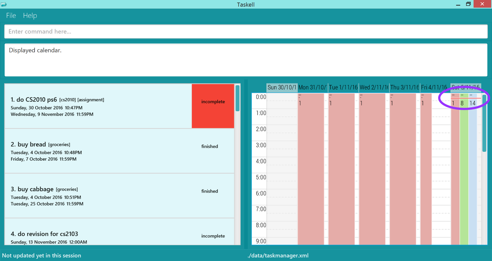

Taskell.jar from here.Are you having a hard time remembering all the work you have to do? Do you have trouble finding a task manager that suits your preference for keyboard input? Well, worry no more, Taskell is here for you!
Taskell will be your personal secretary. It will keep track of your daily tasks and remind you of any important dates and deadlines. What distinguishes Taskell from other task managers is that Taskell only requires a single line of command for every task input. This means that you can record each one of your tasks with just a single statement. You will no longer have to use a mouse if you do not wish to.
Ready to begin life anew with a more efficient task manager? Read on to find out more!
This section guides you through the installation of Taskell.
Step 1: Ensure you have Java version 1.8.0_60 or later installed in your Computer.
Having any Java 8 version is not enough.
This application will not work with earlier versions of Java 8.
Step 2: Download the latest Taskell.jar from here.

Step 3: Copy the file to the folder you want to use as the home folder for your Task Manager.
Step 4: Double-click the file to start the application. The GUI should appear in a few seconds.

Diagram 1: A screenshot of the Graphical User Interface (GUI)
Step 5: Type the relevant command in the command box and press Enter to execute it.
Step 6: Some example commands you can try:
list : Displays all tasksadd buy MA1101R textbook today : Adds a task called buy MA1101R textbook to be done by today.delete 3 : Deletes the third task shown in the current listexit : Exits the application This section shows the different commands that you can use in Taskell. Words that are in UPPER_CASE are parameters. The parameters are listed below.
Please refer to Appendix A for the date formats that Taskell supports.
Default start date has been set to today's date.
Default end date has been set to be the same as the start date.
Please refer to Appendix B for the time formats that Taskell supports.
Default start time has been set to 12:00AM
Default end time has been set to 11:59PM
If the task is added today and no start time is provided, the default start time will be set to the current time.
In the GUI, level 1,2 and 3 tasks are marked as green, yellow and red respectively. Tasks with default priority level are not marked with any colors.
Words that are in italics are used to identify the parameters while words enclosed in SQUARE_BRACKETS are optional.
INDEX refers to the index number shown in the most recent listing.
help You can use the help command to view a summary of all the commands.
To open the help window
Format: help
add You can use the add command to add different tasks.
To add a floating task
Format: add TASK
Example: add Read Harry Potter book
To add a task with priority
Format: add TASK p/PRIORITY
Example: add Complete math assignment p/3
To add a task with tag(s)
Formats:
add TASK #TAG add Meet Alice in Bugis #friendsadd TASK #TAG [#MORE_TAGS] add Swimming with Jane #friends #leisure To add a recurring task
Format: add TASK r/RECURRING
Example: add Read newspaper on mon r/daily
Take Note!
Floating tasks are not allowed to have recurring status since they do not have any element of date or time
To add a task with date and time
Formats:
add TASK from START_DATE to END_DATEadd Go camping at Kota Tinggi from 3-jun-2016 to 7-jun-2016add TASK from START_TIME to END_TIME add Watch Dr Strange from 7.30pm to 9.25pmTo allow greater flexibility in the command format, Taskell supports a few natural variation such as by, on and at.
The by keyword indicates that the task is a deadline task. Any date or time preceded by this keyword will be stored as an end date and end time respectively.
Formats:
add TASK by DATE add Buy textbook by tuesdayadd TASK by TIMEadd visit Sandy at her house by the seaside by 3.35pmadd TASK by DATE by TIME add Do lab homework by Friday by 7pm The on keyword indicates that the task has to be done on the given date. Any date preceded by this keyword will be stored as a start date.
Format: add TASK on DATE
Example: add Go for meeting on mon
The at keyword indicates that the task has to be done at the given time. Any time preceded by this keyword will be stored as a start time.
Format: add TASK at TIME
Example: add Go for meeting at 3pm
Having understood the aforementioned behaviors of the by, on, at, from and to keyword, you can fuse them together to form more complex tasks.
Formats:
add TASK on DATE at TIME add Go for meeting on Sunday at 3pm add TASK by TIME on DATE add Go for meeting by 3pm on 1-janadd TASK from DATE add Go out with friends from 9amadd TASK on DATE from TIME to TIME add Watch webcast on sat from 4.45pm to 7pmadd TASK from DATE to DATE from TIME to TIME [#TAG] [p/PRIORITY] [r/RECURRING] add Holiday in San Francisco at Ocean Beach by the sea from may to aug from 9am to 11pm #holiday #leisure p/3 r/monthlyTake note!
A task can only contain up to a maximum of 1 start time, 1 end time, 1 start date and 1 end date. Any additional parameter will be treated as part of the description
Any date or time not preceded by 'by', 'on', 'at', 'from' or 'to' will also be treated as part of the description
Moreover, Taskell is able to automatically make adjustments to the date and time so that the task entered remains relevant.
Examples:
add Create powerpoint slides for project from 11pm to 3am add Staycation with friends from sunday to tues edit You can use the edit command to edit any parts of a task
Formats:
edit INDEX [st: NEW_START_TIME] [et: NEW_END_TIME] [desc: NEW_DESCRIPTION] [sd: NEW_START_DATE] [ed: NEW_END_DATE] [p: NEW_PRIORITY]  Diagram 9: Edits the 1st task on the list.
Diagram 9: Edits the 1st task on the list.
Entering "edit 1 desc: send all emails sd: 11-11-2016 ed: 12-11-2016 st: 3pm et: 4pm p: 3", will update description to "send all emails", start date to 11-11-2016, end date to 12-11-2016, start time to 3pm end time to 4pm and priority to 3.
Take Note!
- You only need to key in the necessary parameters of the task you would like to change. Not all parameters are required.
- Order of the parameters is not important.
find You can use the find command to view tasks with specific keywords.
Formats:
find KEYWORD [MORE_KEYWORDS]find banana milk essayTake Note!
Tasks with words that match the keyword includes those that contain the keyword. For example, searching for "book" will match with "book", "textbook", "storybook" etc.
find-tag TAG [MORE_TAGS]find-tag homework essay cs2103
Diagram 3: Keying in find cs2010 displays list of tasks with 'cs2010' as one of the keywords in task description.
Take Note!
- The order of the keywords does not matter. e.g. 'chicken egg' will match 'egg chicken'.
- Tasks matching at least one keyword will be displayed. e.g. 'chicken' will match 'chicken duck'
delete You can use the delete command to delete a task at a specified INDEX.
Format: delete INDEX
Example: find violin, then delete 1
Deletes the first task shown in the list after executing the find command.
done You can use the done command to mark an uncompleted task as completed.
Format: done INDEX
Example: done 1
Marks the first task as finished and moves it to the list of completed tasks.
undone You can use the undone command to mark a completed task as uncompleted.
Format: undone INDEX
Example: undone 1
Marks the first task as incomplete and moves it to the lsit of uncompleted tasks.
list You can use the list command to display a certain type of tasks.
Formats:
list list-all list-date DATE list-done list-priority PRIORITY
Diagram 2: Displays all the tasks to be done by today after typing list-date today.
clear You can permanently clear all task data.
Format: clear

Diagram 12: Typing clear will prompt a confirm pop-up window
Take Note!
clearcommand is irreversible!
history or hist You can view the command history available for undo on the right panel when undoing your previous commands.
Format: history or hist

Diagram 4: Keying in hist will show a list of command history on the right panel
Take Note!
- Only commands that are available for undo will be shown here.
- Refer to the
undosection below for more information on which commands can be undone.
undo If you wish to undo your most recent action, you can do so by using the undo command.
To undo previous commands, Enter hist to see a list of previous commands that can be undone.
Then use the undo command together with the specified INDEX from the list of command history. Formats:
undoundo INDEX
Undo the command at the specified index in the command history.
Example: hist, then undo 3, will undo the third command in the command history.


Diagrams 5 and 6: undo 2 will undo 2nd command in history
Take Note!
- Undo command only supports
add,edit,delete,done,undoneandundocommands.clearcommand is irreversible!
calendar or cal You can use the calendar command to view a calendar.
Format: calendar or cal
You can refer the calendar on the right panel
when adding tasks and scheduling events. A fine red line is used to indicate the current time.
 Diagram 12: An example of how the current time marker looks like.
The calendar view reflects the tasks shown in the left panel. Each block is marked with the index corresponding to the task, meaning a block marked "4" would correspond to the fourth task.
By default, the calendar view will be shown on the right panel. As the history command also utilises the right panel to display the command history, you have to use the calendar command to toggle between both views.
Take note!
Entering other commands (i.e.find,add) will revert the right panel back to calendar as it is the default view.
save You can specify the path of a folder to store Taskell's data file. Please note that you should have permissions to access the folder.
Format: save FOLDERPATH
Example: save C:\Users\Jim\Documents
To obtain the filepath, navigate to the required file in your File Explorer. Copy the path at the top of the screen and paste it into Taskell. Refer to the diagram below for an example of a filepath.
 Diagram 11: Screenshot of File Explorer in Windows.
Diagram 11: Screenshot of File Explorer in Windows.
If the specified directory is valid but the file is missing, for example, if you entered save C:\Users\Jim\Documents\Project, and 'C:\Users\Jim\Documents\Project' is valid but 'project' file has not been created, Taskell will create the file for you.
Take Note!
- If you only specify a folder name without directory, i.e.
saveproject, Taskell will create a file named 'project' within Taskell's own directory. WhereassaveC:/Users/Jim/Documents/project will open a file named 'project' within your desktop's Documents folder.- Both Windows and Linux OS have restricted symbols not allowed for filenames. Please be aware of the symbols shown in the table below.
| Windows | Linux |
|---|---|
| > | > |
| < | < |
| : | : |
| " | & |
| / | / |
| \ | | |
| | | |
| ? | |
| * |
exit Format: exit
Q: How do I transfer my data to another computer?
A: Install the application in the other computer and overwrite the empty data file it creates with the file that contains the data in your previous Taskell folder.
Q: Do I have to save the data every time I enter new tasks?
A: No, Taskell automatically saves your data every time you enter new tasks. Use save only when you want to transfer your data to a new location on your computer.
Q: Do I have to use exit command whenever I want to exit the application?
A: There is not a need to, as Taskell can be closed by the top right X button with the mouse as well or simply hold down Alt + F4.
| Command | Format |
|---|---|
| Add | add TASK p/[PRIORITY] #[TAG] add TASK by DATE add TASK by TIME add TASK by DATE by TIME add TASK at TIME add TASK on DATE add TASK on DATE by TIME add Task on DATE at TIME add TASK from DATE to DATE add TASK from TIME to TIME add TASK on DATE from TIME to TIME p/[PRIORITY] #[TAG] r/[RECURRING] |
| Calendar View | calendar or cal |
| Clear | clear |
| Delete | delete INDEX |
| Edit | edit INDEX desc: NEW_DESCRIPTION sd: NEW_START_DATE st: NEW_START_TIME ed: NEW_END_DATE et: NEW_END_TIME p: NEW_PRIORITY |
| Find | find KEYWORD [MORE_KEYWORDS] |
| Find by tag | find-tag KEYWORD [MORE_KEYWORDS] |
| Help | help |
| History | history or hist |
| List all tasks | list-all |
| List by specified date | list-date DATE |
| List completed tasks | list-done |
| List uncompleted tasks | list |
| Mark task as finished | done INDEX |
| Mark task as incomplete | undone INDEX |
| Undo | undo undo INDEX |
| Supported Date Format | Example |
|---|---|
| DD-MM-YYYY | 1-1-2016 1/2/2016 1-mar-2016 1-April-2016 1.May.2016 1.Jun.2016 |
| MM-YYYY | jul-2016 july-2016 |
| MM | mar sept December |
| day | today tdy tomorrow tmr thursday thurs thu |
| Supported Time Format | Example |
|---|---|
| In 12-hour format | 12am 5:30am 1pm 10-35pm 11.45pm |
| In words | now midnight afternoon noon |